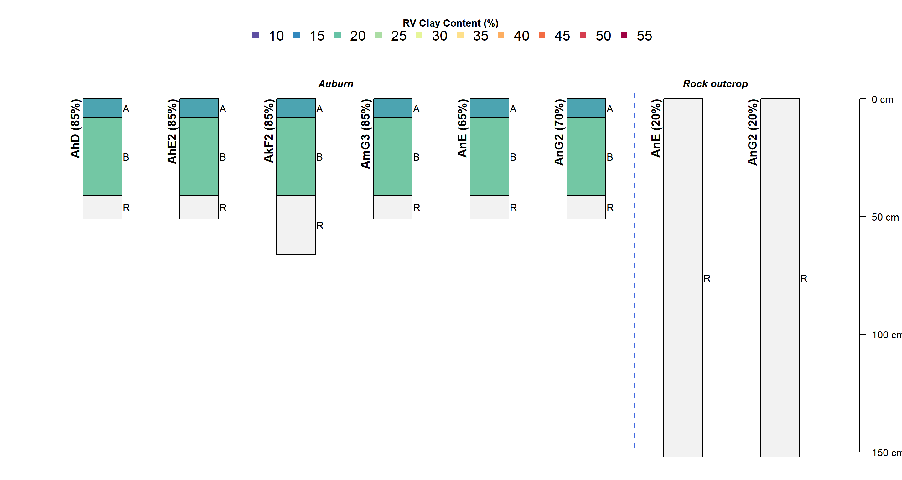
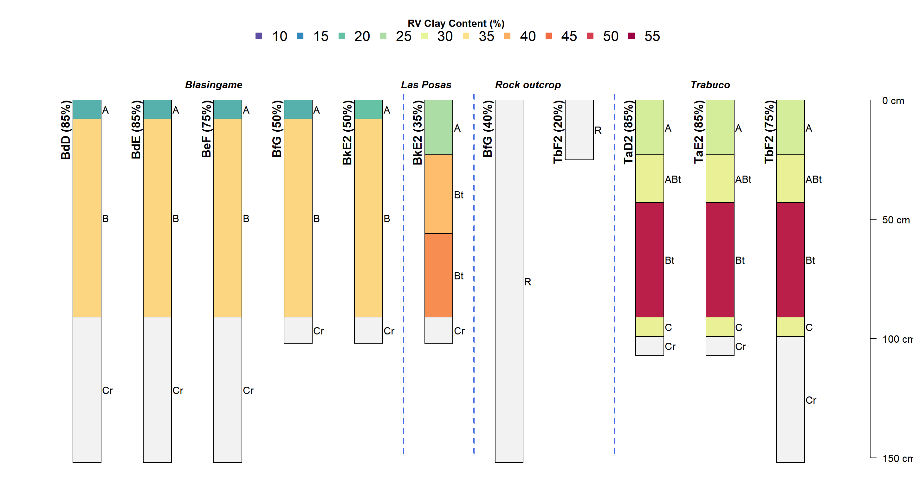
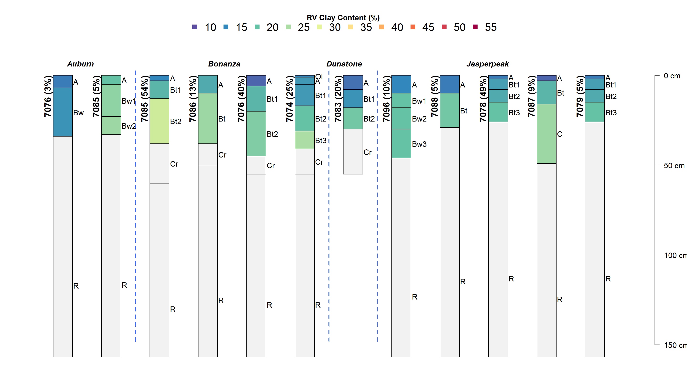
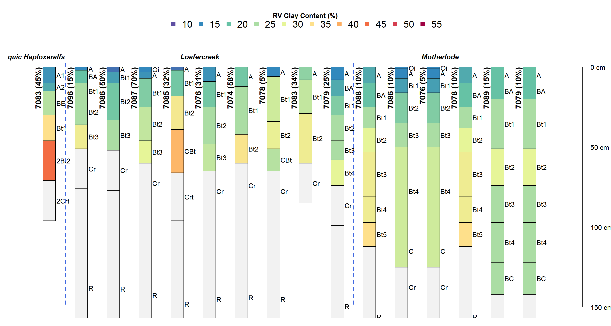
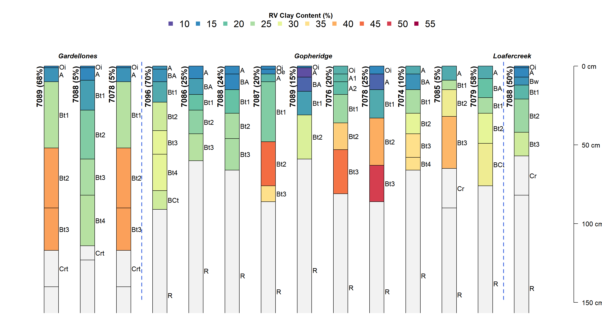
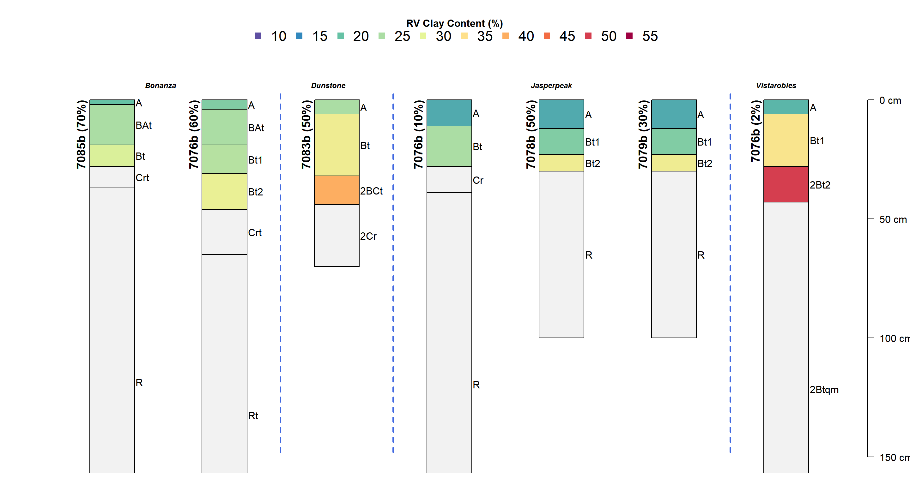
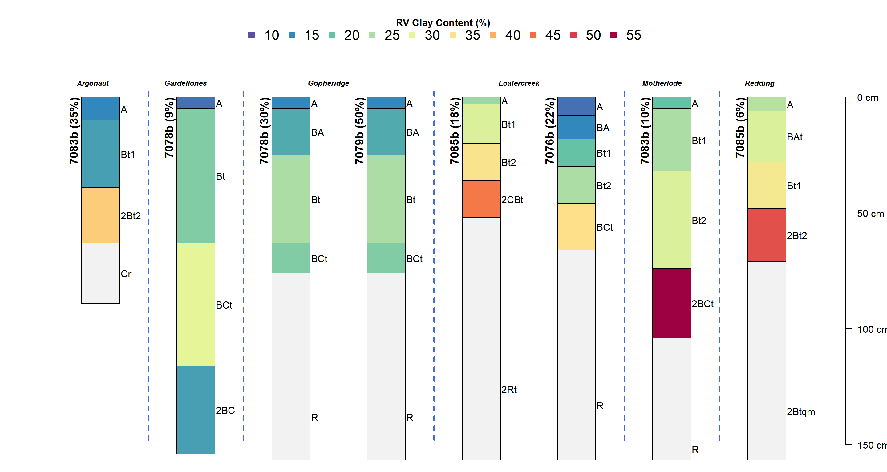

Last updated: 2020-08-03
Checks: 6 1
Knit directory: workflow/
This reproducible R Markdown analysis was created with workflowr (version 1.6.1). The Checks tab describes the reproducibility checks that were applied when the results were created. The Past versions tab lists the development history.
The R Markdown file has unstaged changes. To know which version of the R Markdown file created these results, you’ll want to first commit it to the Git repo. If you’re still working on the analysis, you can ignore this warning. When you’re finished, you can run wflow_publish to commit the R Markdown file and build the HTML.
Great job! The global environment was empty. Objects defined in the global environment can affect the analysis in your R Markdown file in unknown ways. For reproduciblity it’s best to always run the code in an empty environment.
The command set.seed(20200429) was run prior to running the code in the R Markdown file. Setting a seed ensures that any results that rely on randomness, e.g. subsampling or permutations, are reproducible.
Great job! Recording the operating system, R version, and package versions is critical for reproducibility.
Nice! There were no cached chunks for this analysis, so you can be confident that you successfully produced the results during this run.
Great job! Using relative paths to the files within your workflowr project makes it easier to run your code on other machines.
Great! You are using Git for version control. Tracking code development and connecting the code version to the results is critical for reproducibility.
The results in this page were generated with repository version a4dc7f8. See the Past versions tab to see a history of the changes made to the R Markdown and HTML files.
Note that you need to be careful to ensure that all relevant files for the analysis have been committed to Git prior to generating the results (you can use wflow_publish or wflow_git_commit). workflowr only checks the R Markdown file, but you know if there are other scripts or data files that it depends on. Below is the status of the Git repository when the results were generated:
Ignored files:
Ignored: .Rhistory
Ignored: .Rproj.user/
Ignored: DSM/depth_ffs.Rda
Ignored: Ecosites/.Rhistory
Ignored: Ecosites/CA630_ES_dominant_condition.dbf
Ignored: Ecosites/CA630_ES_dominant_condition.prj
Ignored: Ecosites/CA630_ES_dominant_condition.shp
Ignored: Ecosites/CA630_ES_dominant_condition.shx
Ignored: Ecosites/dominant_ecosite_XI.dbf
Ignored: Ecosites/dominant_ecosite_XI.prj
Ignored: Ecosites/dominant_ecosite_XI.shp
Ignored: Ecosites/dominant_ecosite_XI.shx
Ignored: Ecosites/ecoclass_continuousRaster.Rda
Ignored: Ecosites/ecoclass_continuous_rf.Rda
Ignored: Ecosites/ecosite_training_data.Rda
Ignored: Scripts/mucomp/.Rhistory
Ignored: Scripts/mucomp/.Rproj.user/
Ignored: data/
Ignored: workflow/.Rhistory
Ignored: workflow/.Rproj.user/
Ignored: workflow/data/project_mapunits_ssurgo.dbf
Ignored: workflow/data/project_mapunits_ssurgo.prj
Ignored: workflow/data/project_mapunits_ssurgo.shp
Ignored: workflow/data/project_mapunits_ssurgo.shx
Untracked files:
Untracked: .gitignore
Untracked: DSM/ffs_prediction_depth_cm.tif
Untracked: DSM/ffs_prediction_depth_cm.tif.ovr
Untracked: DSM/prediction_musuite.tif
Untracked: DSM/predictions/
Untracked: DSM/predictor_stack_800m.tif
Untracked: DSM/slope_q80_queen_project.tif
Untracked: DSM/slope_q80_queen_project.tif.aux.xml
Untracked: DSM/slope_q80_queen_project.tif.ovr
Untracked: DSM/slope_queen_project.tif
Untracked: DSM/slope_queen_project.tif.aux.xml
Untracked: DSM/slope_queen_project.tif.ovr
Untracked: DSM/slope_rook_project.tif
Untracked: DSM/slope_rook_project.tif.ovr
Untracked: Geodata/
Untracked: History/
Untracked: Literature/
Untracked: Maps/
Untracked: Points/
Untracked: Premap/
Untracked: Projects/2020-2SON-MLRA-004.html
Untracked: Projects/MVO_West/
Untracked: Projects/progress_update_april2020.pptx
Untracked: Projects/project_mapunits.csv
Untracked: Projects/project_mapunits_b.zip
Untracked: workflow/output/
Unstaged changes:
Modified: workflow/analysis/00-get_project.Rmd
Modified: workflow/analysis/01-project_extent.Rmd
Modified: workflow/analysis/05-project_pedons.Rmd
Note that any generated files, e.g. HTML, png, CSS, etc., are not included in this status report because it is ok for generated content to have uncommitted changes.
These are the previous versions of the repository in which changes were made to the R Markdown (workflow/analysis/01-project_extent.Rmd) and HTML (workflow/docs/01-project_extent.html) files. If you’ve configured a remote Git repository (see ?wflow_git_remote), click on the hyperlinks in the table below to view the files as they were in that past version.
| File | Version | Author | Date | Message |
|---|---|---|---|---|
| Rmd | a4dc7f8 | Andrew G. Brown | 2020-08-03 | organizing and update |
| html | a4dc7f8 | Andrew G. Brown | 2020-08-03 | organizing and update |
This project will focus on a subset of Auburn and Blasingame map units totaling 112,328 acres in CA649. The primary focus being on the portion found on metavolcanic rocks – which has been, and continues to be, the central concept of these soil series (Auburn, Blasingame) and mapunits. The Auburn and Blasingame mapunits used in CA649 generally align to the Bonanza, Jasperpeak, Loafercreek, Gopheridge, Motherlode and Gardellones concepts used in CA630.
The field work that was done in Mariposa County survey (CA649) was completed in the late 1950’s and 60’s, with the manuscript issued in 1974. As such, much of the field/mapping/correlation work was done before Soil Taxonomy (1975). The pre-Taxonomy mapping concepts were converted to the new system for publication.
In 2018, the MLRA 18 provisional ecological site correlation effort recognized many areas in LRU XI where soil/site correlations could not be made. CA649, Mariposa County Area, is in the southernmost portion of LRU 18XI and is transitional between the Central and Southern Foothills LRU concepts.
Some of the series concepts used in this area have changed and new series that are more specific to the MLRA have been developed. It is expected that field data and subsequent analysis will support correlation of some of the modern, existing MLRA 18 series and mapunit concepts that have been developed in adjacent CA630 survey.
In order to capture this variety of mapunit concepts and keep track of correlation needs, several placeholder projects were created to hold information about these “sets” of related mapunits.
The following mapunits were selected as a priority for this project as they do not have a modern ecological site correlated to the major component and cover significant acreage. In aggregate, they conform with the Bonanza-Loafercreek or Jasperpeak-Gopheridge type complexes that are mapped in CA630.
AhD (Auburn loam, 2 to 15 percent slopes)
AnE (Auburn very rocky loam, 15 to 30 percent slopes)
AhE2 (Auburn loam, 15 to 30 percent slopes, eroded)
AnG2 (Auburn very rocky loam, 30 to 75 percent slopes, eroded)
BdD (Blasingame loam, 2 to 15 percent slopes)
BdE (Blasingame loam, 15 to 30 percent slopes)
BeF (Blasingame rocky loam, 15 to 50 percent slopes)
Below is series of grouped profile plots showing TUD data, existing MLRA mapunits and new (proposed) MLRA mapunits.
Reading layer `project_mapunits_ssurgo' from data source `E:\CA649\workflow\data' using driver `ESRI Shapefile'
Simple feature collection with 2513 features and 5 fields
geometry type: POLYGON
dimension: XY
bbox: xmin: 157608.9 ymin: 4119654 xmax: 243235.7 ymax: 4246709
epsg (SRID): 32611
proj4string: +proj=utm +zone=11 +datum=WGS84 +units=m +no_defsUpdating layer `project_mapunits_b' to data source `output/project_mapunits_b.shp' using driver `ESRI Shapefile'
Updating existing layer project_mapunits_b
Writing 1 features with 0 fields and geometry type Polygon.The Auburn-dominant mapunits differ primarily in slope phase and rock outcrop percentage. Nominally Auburn does not have / has not been mapped with an argillic horizon. Modern data and descriptions have generally relegated the non-argillic case to more pedogenically “unstable” portions of the landscape.
AnE and AnG2 are complexes of Auburn and Rock outcrop – the rock outcrop component is portrayed with ‘very rocky’ in name. These mapunits have high RV rock outcrop percentage – much higher than portrayed in most CA630 mapunits – and all CA630 mapunits in these slope classes. A higher [20] value from the range given in the manuscript [10-25%] was selected when the DMU was created, which might not have been the best choice for most delineations, even though it was “conservative.”
There is a wide range in spatial distribution of rock outcrop with some crests of hills as well as scoured drainageways exceeding 50% cover. However, such areas tend to be small and/or relegated to specific parts of the landscape.
With adjustment of linework to capture the rockiest/most-contrasting parts of landscape in other mapunits, these rock outcrop percentages will be lowered for more dominant, generally lower-sloping MLRA mapunits.

In the Blasingame, Las Posas and Trabuco mapunits, we can see that the fine-loamy series Blasingame has an argillic horizon with RV value claytotal_r between 35 and 40% (36%) clay throughout, and that the Las Posas and Trabuco soils have comparitively higher clay contents (>40%) in the subsoil and are Fine Rhodo- or Haplo-xeralfs, respectively.

In contrast, almost all of the CA630 components are fine-loamy and some are skeletal. Whereas, none of the components used in CA649 on metavolcanic rocks are skeletal – and even the fine-loamy soils are fine by modern standard.
We can compare these TUD-based components visually to the component data used in the existing MLRA metavolcanic mapunits that are already on the CA649 legend. Due to the large number of unique components, these will be displayed in sets based on depth and rock fragment content in PSCS.
The shallow components in existing MLRA mapunits reflect difference in depth and cementation class of the weathered bedrock contact. These components are higher in clay content than the Auburn components shown above from the CA649 legend and generally depict a weak to moderate clay increase with depth (argillic horizon / Alfisols); with textures on the light side of clay loam being relatively common.

The dominant condition for low elevation, shallow soils on metavolcanic bedrock and slopes <30% is Bonanza, which is a series concept that includes up to 25cm of paralithic materials overlying a lithic contact (within the series control section). Generally, thicker Cr horizons (no Lithic in SCS) are expected to occur on the water collecting portions of the landscape (Dunstone in MUSYM 7083).
On steeper slopes, often with more rock outcrop, the Jasperpeak components and various deeper soils become more prevalent. The Jasperpeak soils have a weak argillic horizon overlying a lithic contact, so it is comparable to the Auburn except that Jasperpeak is loamy-skeletal.
The clay content distribution in the CA649 components contrast with the CA630 mapunits across the county boundary. While heavier clay contents were portrayed in CA630, and are reflected in high end of ranges, the central concept of the CA630 concept soils generally does not include the heaviest clay textures within the particle size control section.

There are other major differences between the CA649 mapunits and CA630 MLRA mapunits. Notably, skeletal components were not recognized in the CA649 mapunits – but the CA630 mapunits have significant amounts of skeletal soils (Gopheridge, Gardellones).

The new low elevation (Gopher Ridge Formation) shallow components are shown here:

The new low elevation (Gopher Ridge Formation) deeper components are shown here:

TODO
sessionInfo()R version 3.6.3 (2020-02-29)
Platform: x86_64-w64-mingw32/x64 (64-bit)
Running under: Windows 10 x64 (build 17763)
Matrix products: default
locale:
[1] LC_COLLATE=English_United States.1252
[2] LC_CTYPE=English_United States.1252
[3] LC_MONETARY=English_United States.1252
[4] LC_NUMERIC=C
[5] LC_TIME=English_United States.1252
attached base packages:
[1] stats graphics grDevices utils datasets methods base
other attached packages:
[1] sf_0.8-1 soilDB_2.5.6 aqp_1.22
loaded via a namespace (and not attached):
[1] Rcpp_1.0.4.6 RColorBrewer_1.1-2 compiler_3.6.3 later_1.0.0
[5] git2r_0.26.1 plyr_1.8.6 workflowr_1.6.1 class_7.3-15
[9] tools_3.6.3 digest_0.6.25 lifecycle_0.2.0 evaluate_0.14
[13] lattice_0.20-38 rlang_0.4.7 DBI_1.1.0 curl_4.3
[17] yaml_2.2.1 xfun_0.12 e1071_1.7-3 stringr_1.4.0
[21] cluster_2.1.0 knitr_1.28 raster_3.1-5 xml2_1.3.2
[25] fs_1.3.1 classInt_0.4-2 rprojroot_1.3-2 grid_3.6.3
[29] reshape_0.8.8 glue_1.4.1 data.table_1.12.8 R6_2.4.1
[33] rmarkdown_2.3 sp_1.4-2 reshape2_1.4.4 magrittr_1.5
[37] whisker_0.4 scales_1.1.0 units_0.6-5 backports_1.1.5
[41] promises_1.1.0 codetools_0.2-16 htmltools_0.4.0 colorspace_1.4-1
[45] httpuv_1.5.2 KernSmooth_2.23-16 stringi_1.4.6 munsell_0.5.0